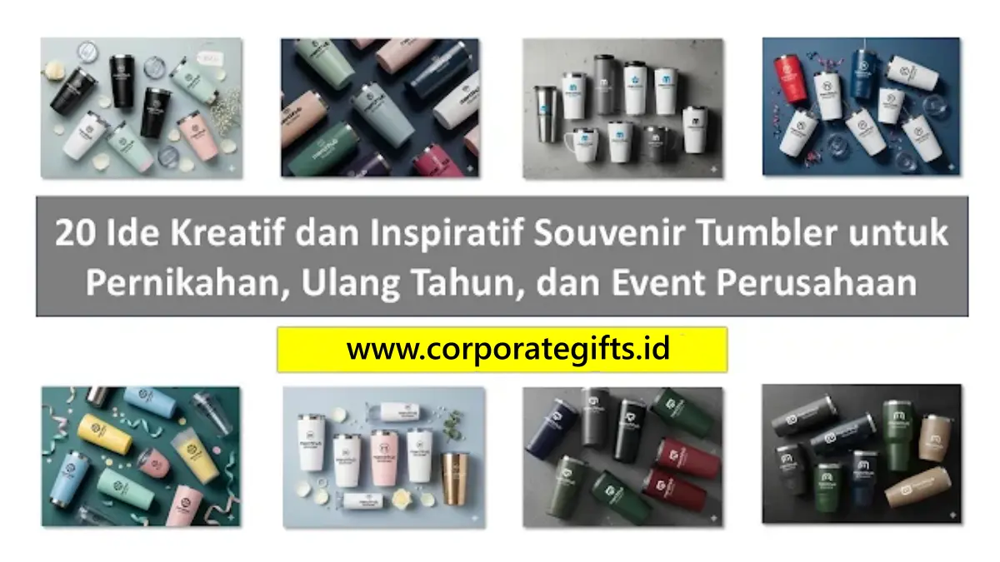

Corporate Gifts ID - Menyediakan inspirasi dan layanan custom souvenir tumbler unik yang fungsional dan elegan, dipersonalisasi melalui motif geometris, warna pastel, inisial monogram, maupun quotes inspiratif untuk kebutuhan hadiah pernikahan, perayaan ulang tahun, dan event promosi perusahaan.
Souvenir tumbler kini menjadi salah satu pilihan cenderamata paling diminati lintas generasi karena memiliki masa pakai harian yang panjang dan fleksibilitas desain yang sangat tinggi. Berbeda dari souvenir konvensional yang kerap berakhir sebagai pajangan tak terpakai, botol minum atau tumbler membawa pesan kepedulian lingkungan sekaligus nilai prestise bagi penyelenggara acara.
Poin Kunci Memilih Souvenir Tumbler Custom:
- Fleksibilitas Multiguna: Cocok untuk segala jenis acara, mulai dari resepsi pernikahan mewah, pesta ulang tahun anak, hingga gathering tahunan korporat B2B.
- Daya Tahan & Ramah Lingkungan: Material stainless steel SUS 304 atau kaca borosilikat food-grade menekan penggunaan botol plastik sekali pakai.
- Teknik Personalisasi Presisi: Grafir laser memberikan sentuhan elegan permanen, sedangkan UV print digital menghasilkan warna akurat sesuai identitas brand.
- Persepsi Nilai Tinggi: Dikemas dengan sliding box atau hardbox berpita untuk menyempurnakan pengalaman membuka hadiah (unboxing experience).
Ragam Ide Desain Souvenir Tumbler Unik
Untuk membuat souvenir tumbler tampil istimewa di mata para tamu, penting menyelaraskan elemen visual dengan esensi perayaan. Berikut beberapa pendekatan desain artistik yang terbukti sangat diminati:
- Motif Geometris Modern: Menggunakan garis tegas monokromatis atau pola chevron yang memberikan kesan modern, minimalis, dan sangat cocok bagi audiens profesional muda.
- Palet Warna Pastel Lembut: Menggabungkan rona dusty pink, sage green, lavender, atau baby blue yang memancarkan ketenangan dan kehangatan estetis.
- Ilustrasi Custom & Karakter Karikatur: Sangat digemari untuk acara santai, perayaan keluarga, atau ulang tahun anak-anak dengan karakter maskot yang ceria.
- Quotes Tipografi Inspiratif: Untaian kata motivasi kerja, kutipan keberkahan, atau peribahasa bijak yang ditata menggunakan tata huruf serif elegan.
- Monogram & Typographic Initial: Inisial nama pemilik yang dicetak eksklusif di bagian depan tumbler untuk menghadirkan nuansa kepemilikan personal.
Inspirasi Souvenir Tumbler Pernikahan yang Romantis dan Elegan
Souvenir pernikahan tidak hanya sekadar tanda terima kasih atas kehadiran tamu undangan, melainkan cerminan rasa syukur dan memori indah dari kedua mempelai:
- Monogram Inisial Pasangan: Gabungan huruf depan kedua mempelai yang diukir laser halus pada permukaan tumbler warna putih mutiara atau rose gold.
- Harmonisasi Warna Tema Wedding: Menyelaraskan warna cat matte tumbler dengan tema dekorasi pelaminan (misalnya emerald green, terracotta, atau champagne gold).
- Quotes Cinta Penuh Makna: Mencantumkan kalimat singkat mengenai cinta, syukur, dan tanggal sakral ijab kabul atau pemberkatan nikah.
- Finishing Matte Minimalis: Lapisan powder coating bertekstur lembut yang tidak licin digenggam serta bebas sidik jari (fingerprint-resistant).
- Kemasan Hardbox Berpita Satin: Memberikan sensasi kado mewah kelas atas saat tamu menerima cenderamata di meja registrasi.

Personalisasi tumbler custom dengan teknik sablon presisi dan laser grafir logo untuk cinderamata corporate event maupun suvenir pernikahan eksklusif.
Souvenir Tumbler untuk Perayaan Ulang Tahun
Baik untuk perayaan sweet seventeen, ulang tahun anak, hingga perayaan usia perak/emas, tumbler custom dapat disesuaikan dengan suasana pesta yang menyenangkan:
- Karakter Animasi & Superhero: Untuk pesta anak, gunakan visual tokoh favorit dengan material botol BPA-free yang ringan dan anti-pecah.
- Warna Cerah Dinamis: Memanfaatkan gradasi warna neon atau pop-art untuk memancarkan energi pesta yang meriah dan bersemangat.
- Penyematan Nama Undangan: Menambahkan nama masing-masing anak di setiap tumbler agar mereka bangga membawa botol minumnya ke sekolah.
- Sedotan Silikon Food-Grade: Menambahkan aksesoris sedotan lipat silikon higienis yang mudah dibersihkan dan aman bagi balita.
- Kardus Craft Window Unik: Boks kemasan dengan jendela transparan di bagian depan sehingga ilustrasi tumbler langsung terpampang manis.
Souvenir Tumbler Tema Perusahaan dan Branding Korporat
Bagi divisi HRD, Marketing, maupun Public Relations, tumbler custom merupakan aset branding berjalan (walking billboard) yang sangat bernilai tinggi:
- Penempatan Logo Korporat Presisi: Logo perusahaan dicetak dengan teknologi laser grafir yang mengikis cat dasar secara elegan, menampakkan kilau stainless steel aslinya.
- Tagline Kampanye & Misi Brand: Menyertakan pesan visi perusahaan seperti "Innovating for the Future" untuk memupuk semangat loyalitas karyawan.
- Kesesuaian Warna Korporat (Pantone Match): Menjamin warna fisik tumbler 100% selaras dengan identitas brand guideline perusahaan tanpa penyimpangan warna.
- Fitur Canggih Smart LED Suhu: Tumbler dengan sensor sentuh LED di tutupnya yang menampilkan suhu air secara real-time, memberi kesan mutakhir dan modern.
- Paket Onboarding Karyawan Baru: Dipadukan bersama agenda kulit A5 dan pulpen metal untuk membentuk paket welcome kit yang meningkatkan retensi staf.
Perbandingan Desain Tumbler Berdasarkan Kebutuhan Acara
Berikut rangkuman rekomendasi konsep desain, pilihan material, dan metode kustomisasi yang paling ideal untuk masing-masing momentum acara:
| Momentum Acara | Karakter Desain & Visual | Rekomendasi Material | Metode Kustomisasi |
|---|---|---|---|
| Resepsi Pernikahan (Wedding) | Monogram inisial nama mempelai, floral pastel, quotes romantis minimalis | Stainless Steel SUS 304 Doff atau Kaca Borosilikat | Laser Grafir Halus atau Sablon Emas/Silver |
| Pesta Ulang Tahun (Birthday) | Ilustrasi karakter kartun, nama perorangan, warna cerah ceria, fun typography | Plastik Tritan BPA-Free atau Stainless Ringan Anti Pecah | UV Print Digital Full-Color 360 Derajat |
| Event Korporat & B2B | Logo instansi minimalis, tagline perusahaan, warna solid corporate Pantone | Vacuum Flask Insulated SUS 304 Tahan Panas 12 Jam | Laser Marking Presisi atau Pad Print Pantone |
Panduan dan Tips Custom Souvenir Tumbler Berkualitas
Sebelum melakukan pemesanan massal, perhatikan beberapa kiat praktis berikut agar cinderamata Anda memuaskan para tamu dan terbebas dari kendala teknis:
- Uji Ketahanan Isolasi Suhu: Pastikan dinding tumbler memiliki konstruksi double-wall vacuum insulation sehingga tidak berembun di bagian luar saat diisi air es dan tidak panas disentuh saat diisi kopi mendidih.
- Perhatikan Keamanan Pangan (Food-Grade): Pastikan ada sertifikasi bebas BPA (BPA Free) dan material logam menggunakan standar minimal stainless steel SUS 304 anti karat.
- Siapkan File Vektor Beresolusi Tinggi: Kirimkan logo atau tipografi dalam format vektor (.AI, .EPS, atau .PDF) ke vendor agar hasil laser grafir tajam dan tidak pecah.
- Sesuaikan Kapasitas Isi: Ukuran 450ml hingga 500ml adalah kapasitas paling ideal karena pas di cup holder mobil dan ringan dibawa bepergian.
- Lakukan Pemesanan Lebih Awal (H-21): Memberikan jeda waktu yang cukup untuk proses approval sampel mockup digital dan quality control sebelum hari pelaksanaan acara.
Pertanyaan Seputar Souvenir Tumbler Custom (FAQ)

Ditulis oleh: Sholikhatun Nikmah
Creative Product Designer & Bespoke PackagingDesainer produk dan spesialis kemasan kustom di CorporateGifts.ID. Berpengalaman merancang ragam cinderamata drinkware, gift set premium, dan packaging eksklusif untuk acara korporat maupun perayaan personal.
Lihat Profil Lengkap & Panduan Lainnya